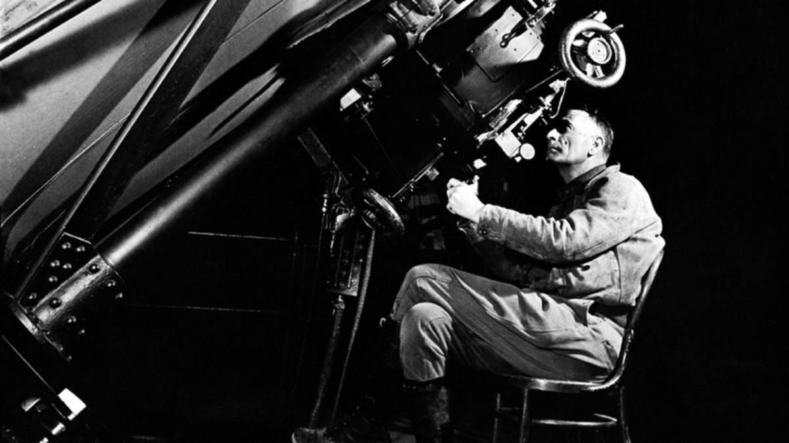

by Anthony
Postado em 1 de Janeiro, de 2019 às 12:00
Edwin Powell Hubble (Marshfield, 20 de novembro de 1889 — San Marino, 28 de setembro de 1953) foi um astrônomo estadunidense. Famoso por ter descoberto que as até então chamadas nebulosas eram na verdade galáxias fora da Via Láctea, e que estas afastam-se umas das outras a uma velocidade proporcional à distância que as separa. Seu nome foi dado ao primeiro telescópio espacial, posto em órbita em 1990, para estudar o espaço sem as distorções causadas pela atmosfera.
Em 1914 foi aceito como pesquisador no Observatório Yerkes, em Williams Bay, Wisconsin, e dedicou-se ao estudo das nebulosas, que começou a dividir como pertencentes ou não à Via Láctea. Depois da I Guerra Mundial, em 1919, voltou aos Estados Unidos e começou a trabalhar no Observatório do Monte Wilson, perto de Pasadena, na Califórnia, onde trabalharia até sua morte. Continuou a trabalhar com as nebulosas, utilizando-se de um telescópio refletor recém-construído. A partir da relação conhecida entre período e luminosidade das cefeidas, em geral, e do brilho aparente das cefeidas de Andrômeda, em 1923 Hubble pôde calcular a distancia entre esta e a Via Láctea, obtendo um valor de quase 1 milhão de anos-luz. Mesmo sendo um valor errado para a distância de Andrômeda, pois atualmente o valor é de um pouco mais de 2 milhões de anos-luz, Hubble mostrou que ela estava bem além dos limites de nossa galáxia, que tem cem mil anos-luz de diâmetro. Assim ficou provado que Andrômeda era uma galáxia independente.
Depois dessas descobertas, passou a pesquisar a estrutura das galáxias e a classificá-las pelo formato, como espiral ou elíptica. Posteriormente começaria a estudar as distâncias que as galáxias se encontram da Via Láctea e suas velocidades no espaço. Em 1929 demonstrou que as galáxias se afastam em grande velocidade e que essa velocidade aumenta com a distância. A relação entre a velocidade e a distância da Terra é conhecida como a Lei de Hubble e a razão entre os dois valores é conhecida como Constante de Hubble. Este deslocamento das galáxias serviria como base, em 1946, para George Gamow estabelecer a teoria do Big Bang. Analisando o desvio para o vermelho em suas observações, desenvolveu a teoria da expansão do universo e anunciou que a velocidade de uma nebulosa em relação a outra é proporcional à distância entre elas (a chamada constante de Hubble). Ou seja, Hubble estudou a luz emitida pelas galáxias distantes, observando que o comprimento de onda em alguns casos era maior que aquele obtido no laboratório. Esse fenômeno ocorre quando a fonte e o observador se movem: quando se afastam um do outro, o comprimento de onda visto pelo observador aumenta, diminuindo quando a fonte e o observador se aproximam. Se uma galáxia estiver se aproximando, a luz desloca-se para a cor azul e se estiver se afastando a luz desloca-se para a cor vermelha (Efeito Doppler). Em cada caso, a variação relativa do comprimento é proporcional à velocidade com que a fonte se move.
Depois ser condecorado com a medalha de ouro da Real Sociedade de Astronomia de Londres, em 1940, e com a medalha presidencial do mérito dos Estados Unidos, em 1946, Hubble passou a utilizar o telescópio Hale, concluído em 1948, no Monte Palomar, em Pasadena, para estudar objetos estelares fracos. Faleceu em 1953, antes de completar 64 anos, vitima de uma trombose cerebral que o matou instantaneamente e sem dor, como garantiu o antigo médico da família à sua esposa, Grace Hubble. Ela recusou-se a fazer um funeral e a dar satisfações com que havia feito com o corpo de seu marido. Alguns fanáticos acham simplesmente que Hubble "voltou para casa". O astrônomo foi homenageado, em 1990, quando telescópio espacial Hubble foi batizado com seu sobrenome. Após apresentar problemas relativos à qualidade das imagens, o equipamento foi consertado por astronautas. Por situar-se fora da atmosfera da Terra, que distorce e enfraquece as imagens do Universo, o telescópio tem sido utilizado na coleta de dados sobre objetos muito distantes.
Equipado com seus cinco sentidos, o homem explora o universo ao seu redor e chama a aventura de Ciência.